Learning Module 12 Yield-Based Bond Convexity and Portfolio Properties - Part 1: Introduction
Volume 6: Fixed Income
Learning Module 12 Yield-Based Bond Convexity and Portfolio Properties
Part 1/2: Introduction (PDF Pages 307–320)
Tập 6: Thu nhập Cố định (Fixed Income)
Học phần 12: Độ lồi Trái phiếu Dựa trên Lợi suất và Các Đặc tính Danh mục Đầu tư (Yield-Based Bond Convexity and Portfolio Properties)
Phần 1/2: Giới thiệu (Trang PDF 307–320)
L E A R N I N G M O D U L E 12
H Ọ C P H Ầ N 12
Yield-Based Bond Convexity and Portfolio Properties
Độ lồi Trái phiếu Dựa trên Lợi suất và Các Đặc tính Danh mục Đầu tư (Yield-Based Bond Convexity and Portfolio Properties)
LEARNING OUTCOMES
MỤC TIÊU HỌC TẬP (LEARNING OUTCOMES)
- Mastery The candidate should be able to: calculate and interpret convexity and describe the convexity adjustment calculate the percentage price change of a bond for a specified change in yield, given the bond’s duration and convexity calculate portfolio duration and convexity and explain the limitations of these measures
Làm chủ kiến thức – Ứng viên cần có khả năng:
- tính toán và diễn giải độ lồi (convexity) và mô tả phần điều chỉnh độ lồi (convexity adjustment)
- tính toán phần trăm thay đổi giá của một trái phiếu đối với một mức thay đổi xác định trong lợi suất, khi biết thời lượng (duration) và độ lồi (convexity) của trái phiếu đó
- tính toán thời lượng và độ lồi của danh mục đầu tư (portfolio duration and convexity) và giải thích những hạn chế của các thước đo này
INTRODUCTION
GIỚI THIỆU (INTRODUCTION)
1
1
While duration is a linear approximation of the sensitivity of a bond’s price to changes in yield, the true relationship between a bond’s price and its yield-to-maturity is a curved (convex) line. We introduce convexity as a complementary risk measure to improve bond price change estimates based on modified duration alone to account for this non-linear relationship. The convexity adjustment becomes more important when considering larger moves in yield-to-maturity and longer-maturity bonds. These lessons will also show how to estimate duration and convexity for a portfolio of bonds, as well as highlight limitations due to underlying assumptions.
Mặc dù thời lượng (duration) là một phép xấp xỉ tuyến tính (linear approximation) về độ nhạy của giá trái phiếu đối với những thay đổi trong lợi suất, mối quan hệ thực sự giữa giá của một trái phiếu và lợi suất đáo hạn của nó là một đường cong (lồi – convex). Chúng ta giới thiệu độ lồi (convexity) như một thước đo rủi ro bổ sung nhằm cải thiện các ước tính thay đổi giá trái phiếu vốn chỉ dựa trên thời lượng điều chỉnh (modified duration) để tính đến mối quan hệ phi tuyến tính này. Phần điều chỉnh độ lồi (convexity adjustment) trở nên quan trọng hơn khi xem xét những biến động lớn hơn trong lợi suất đáo hạn và các trái phiếu có kỳ hạn dài hơn. Các bài học này cũng sẽ chỉ ra cách ước tính thời lượng và độ lồi cho một danh mục đầu tư trái phiếu, đồng thời nêu bật những hạn chế do các giả định cơ sở.
Most of the examples and exhibits used throughout the reading can be downloaded as a Microsoft Excel workbook. Each worksheet in the workbook is labeled with the corresponding example or exhibit number in the text.
Hầu hết các ví dụ và bảng biểu được sử dụng xuyên suốt bài đọc có thể được tải xuống dưới dạng sổ làm việc Microsoft Excel. Mỗi trang tính trong sổ làm việc được gắn nhãn với số ví dụ hoặc bảng biểu tương ứng trong văn bản.
LEARNING MODULE OVERVIEW
TỔNG QUAN HỌC PHẦN (LEARNING MODULE OVERVIEW)
- Convexity is a complementary risk metric that measures the second-order (non-linear) effect of yield changes on price for an option-free fixed-rate bond. The convexity adjustment adds to the linear price estimate provided by modified duration.
- Độ lồi (Convexity) là một thước đo rủi ro bổ sung đo lường tác động bậc hai (phi tuyến tính – second-order non-linear effect) của những thay đổi lợi suất lên giá đối với một trái phiếu lãi suất cố định không kèm quyền chọn (option-free fixed-rate bond). Phần điều chỉnh độ lồi được cộng thêm vào ước tính giá tuyến tính được cung cấp bởi thời lượng điều chỉnh.
-
Convexity is always positive for an option-free fixed-rate bond, such that estimated price increases from a decline in yields are higher than duration alone would suggest and estimated price decreases from an increase in yields are lower than duration alone would suggest. Therefore, convexity is valuable to investors.
-
Convexity has the same relationship with bond features as duration: a fixed-rate bond will have greater convexity the longer its time-to-maturity, the lower its coupon rate, and the lower its yield-to-maturity.
-
Money convexity expresses convexity in terms of currency units or percent of par for a position in a bond because it is the product of a bond’s annual convexity and its full price.
-
Portfolio duration and convexity can be calculated (1) as the weighted average of time to receipt of the aggregate cash flows or (2) by using the weighted averages of the durations and convexities of the individual bonds that make up the portfolio.
-
While the first method is theoretically correct, it is difficult to use in practice. The second method is commonly used by portfolio managers but implicitly assumes parallel shifts in the yield curve, which are rare.
-
Độ lồi luôn mang giá trị dương đối với một trái phiếu lãi suất cố định không kèm quyền chọn, sao cho mức tăng giá ước tính khi lợi suất giảm sẽ cao hơn mức mà chỉ riêng thời lượng gợi ý, và mức giảm giá ước tính khi lợi suất tăng sẽ thấp hơn mức mà chỉ riêng thời lượng gợi ý. Do đó, độ lồi có giá trị đối với các nhà đầu tư.
-
Độ lồi có cùng mối quan hệ với các đặc điểm của trái phiếu giống như thời lượng: một trái phiếu lãi suất cố định sẽ có độ lồi lớn hơn khi thời gian đáo hạn càng dài, lãi suất coupon càng thấp, và lợi suất đáo hạn càng thấp.
-
Độ lồi tiền tệ (Money convexity) biểu thị độ lồi tính theo đơn vị tiền tệ hoặc phần trăm mệnh giá cho một vị thế trái phiếu vì nó là tích số giữa độ lồi hàng năm (annual convexity) của trái phiếu và giá toàn phần (full price) của nó.
-
Thời lượng và độ lồi của danh mục đầu tư (Portfolio duration and convexity) có thể được tính (1) bằng trung bình có trọng số của thời gian nhận các dòng tiền gộp (aggregate cash flows) hoặc (2) bằng cách sử dụng trung bình có trọng số của thời lượng và độ lồi của từng trái phiếu riêng lẻ cấu thành nên danh mục đầu tư.
-
Mặc dù phương pháp thứ nhất đúng về mặt lý thuyết, nhưng nó rất khó sử dụng trong thực tế. Phương pháp thứ hai thường được các nhà quản lý danh mục đầu tư sử dụng nhưng ngầm giả định sự dịch chuyển song song (parallel shifts) của đường cong lợi suất, điều vốn rất hiếm gặp.
LEARNING MODULE SELF-ASSESSMENT
TỰ ĐÁNH GIÁ HỌC PHẦN (LEARNING MODULE SELF-ASSESSMENT)
These initial questions are intended to help you gauge your current level of understanding of the learning module.
Những câu hỏi ban đầu này nhằm giúp bạn đánh giá mức độ hiểu biết hiện tại của mình về học phần.
- The annualized convexity of a four-year, 2.8% (semiannual) coupon bond priced at par at issuance on 1 August 2035 and maturing on 1 August 2039 is closest to:
-
A. 7.624.
-
B. 16.413.
- Độ lồi năm hóa (annualized convexity) của một trái phiếu trả lãi coupon 2.8% (bán niên), kỳ hạn 4 năm, được định giá ngang mệnh giá khi phát hành vào ngày 1 tháng 8 năm 2035 và đáo hạn vào ngày 1 tháng 8 năm 2039 gần nhất với:
-
A. 7.624.
-
B. 16.413.
-
C. 65.651.
C. 65.651. Solution:
Lời giải:
B is correct.
B là đáp án đúng.
Four-Year, 2.8% Semiannual Bond at Issuance
Trái phiếu Bán niên 2.8%, Kỳ hạn 4 Năm tại Ngày Phát hành (Four-Year, 2.8% Semiannual Bond at Issuance)
| Fixed Coupon (%) | 2.80 |
|---|---|
| Periods p.a. | 2 |
| Price (per 100 Par Value) | 100 |
| Yield-to-Maturity (%) | 2.8000 |
| Đặc điểm | Giá trị |
|---|---|
| Lãi suất Coupon Cố định (%) (Fixed Coupon %) | 2.80 |
| Số kỳ mỗi năm (Periods p.a.) | 2 |
| Giá (trên 100 Mệnh giá) (Price per 100 Par Value) | 100 |
| Lợi suất Đáo hạn (%) (Yield-to-Maturity %) | 2.8000 |
| (1) (2) |
(3) | (4) | (5) (6) |
= (2) × (5) | (7) = Col. 2 × (Col. 2 + 1) × Col. 5 × (1 + YTM/2)–2 |
|---|---|---|---|---|---|
| Period Time to Receipt |
Cash Flow | Present Value |
Weight Tim × |
e to Receipt Weight |
Convexity of Cash Flows |
| 1 1.0 |
1.4 | 1.380671 | 0.01381 |
0.01381 | 0.02686 |
| 2 2.0 |
1.4 | 1.361608 | 0.01362 |
0.02723 | 0.07946 |
| 3 3.0 |
1.4 | 1.342809 | 0.01343 |
0.04028 | 0.15672 |
| 4 4.0 |
1.4 | 1.324269 | 0.01324 |
0.05297 | 0.25759 |
| 5 5.0 |
1.4 | 1.305985 | 0.01306 |
0.06530 | 0.38105 |
| 6 6.0 |
1.4 | 1.287954 | 0.01288 |
0.07728 | 0.52611 |
| 7 7.0 |
1.4 | 1.270171 | 0.01270 |
0.08891 | 0.69179 |
| 8 8.0 |
101.4 | 90.726533 | 0.90727 |
7.25812 | 63.53176 |
| 100.0000 | 1.00000 |
7.62391 | 65.65133 | ||
| Annualized Macaulay Duration an | d Convexity | 3.81195 | 16.41283 | ||
| Annualized convexity is 16.41 (65.65133) divided by the squ year: 22= 4). |
283 and result are of the perio |
s from the sum ds per year (tw |
of Column 7 o periods per |
||
| 2. Identify which of the followin h A.is always negative for an i B.accounts for the first-ord f C.is added to the bond pri i duration. Solution: C is correct. The convexity ad provided by modified duratio %ΔP V Full≈ (−AnnModDur |
g statements is h option-free fix ier effect of yie ce change estim i h justment is ad i n for a given ch ×ΔYield) +[ 1 _ 2 |
true. The conv ied-rate bond. i f ld changes on a ate provided b i h ded to the price i ange in yield-t ×AnnConvexity |
h exity adjustment: i f bond. y modified h change estimate i o-maturity: × (ΔYield) 2 ] . |
||
| A is incorrect because convex i rate bond. B is incorrect because convex f yield changes on a bond’s pri i effect. |
ity is always po i ity accounts fo f ce and duration i |
sitive for an op i r the second-or f accounts for th i |
tion-free fixed- der effect of e first-order |
||
| Questions 3 and 4 relate to the An investor holds a GBP50,0 i pon bond (semiannual) trading i 8.376, and annualized convexit h to decline by 100 bps. |
following infor 00,000 positio i at par value. A i y is 81.701. Th |
mation. n in a 10-year, i nnualized moi he investor expe |
3.50% fixed-cou- dified duration is h cts interest rates |
||
| 3. The expected percentage cha | h nge in the price | h of the bond is | _closest_to: | ||
| A.7.97%. | |||||
| B.8.01%. | |||||
| C.8.78%. | |||||
| Solution: | |||||
| C is correct. The expectedpr | ice change is ca | lculated as follo | ws: |
| (1) Kỳ (Period) | (2) Thời gian nhận (Time to Receipt) | (3) Dòng tiền (Cash Flow) | (4) Giá trị hiện tại (Present Value) | (5) Trọng số (Weight) | (6) = (2) × (5) Thời gian nhận × Trọng số | (7) = Cột 2 × (Cột 2 + 1) × Cột 5 × (1 + YTM/2)⁻² Độ lồi của Dòng tiền (Convexity of Cash Flows) |
|---|---|---|---|---|---|---|
| 1 | 1.0 | 1.4 | 1.380671 | 0.01381 | 0.01381 | 0.02686 |
| 2 | 2.0 | 1.4 | 1.361608 | 0.01362 | 0.02723 | 0.07946 |
| 3 | 3.0 | 1.4 | 1.342809 | 0.01343 | 0.04028 | 0.15672 |
| 4 | 4.0 | 1.4 | 1.324269 | 0.01324 | 0.05297 | 0.25759 |
| 5 | 5.0 | 1.4 | 1.305985 | 0.01306 | 0.06530 | 0.38105 |
| 6 | 6.0 | 1.4 | 1.287954 | 0.01288 | 0.07728 | 0.52611 |
| 7 | 7.0 | 1.4 | 1.270171 | 0.01270 | 0.08891 | 0.69179 |
| 8 | 8.0 | 101.4 | 90.726533 | 0.90727 | 7.25812 | 63.53176 |
| 100.0000 | 1.00000 | 7.62391 | 65.65133 | |||
| Thời lượng Macaulay và Độ lồi Năm hóa (Annualized Macaulay Duration and Convexity) | 3.81195 | 16.41283 |
Độ lồi năm hóa là 16.41283 và được tính từ tổng của Cột 7 (65.65133) chia cho bình phương số kỳ mỗi năm (hai kỳ mỗi năm: $2^2 = 4$).
- Hãy xác định phát biểu nào sau đây là đúng. Phần điều chỉnh độ lồi (convexity adjustment): - A. luôn mang giá trị âm đối với một trái phiếu lãi suất cố định không kèm quyền chọn. - B. tính đến tác động bậc nhất (first-order effect) của những thay đổi lợi suất lên một trái phiếu. - C. được cộng vào ước tính thay đổi giá trái phiếu được cung cấp bởi thời lượng điều chỉnh.
Lời giải:
C là đáp án đúng. Phần điều chỉnh độ lồi được cộng thêm vào ước tính thay đổi giá được cung cấp bởi thời lượng điều chỉnh đối với một mức thay đổi nhất định trong lợi suất đáo hạn:
Các câu hỏi 3 và 4 liên quan đến thông tin sau đây.
Một nhà đầu tư nắm giữ vị thế 50,000,000 GBP trong một trái phiếu trả lãi coupon cố định 3.50% (bán niên), kỳ hạn 10 năm đang giao dịch ngang mệnh giá. Thời lượng điều chỉnh năm hóa là 8.376, và độ lồi năm hóa là 81.701. Nhà đầu tư kỳ vọng lãi suất sẽ giảm 100 bps.
- Phần trăm thay đổi kỳ vọng trong giá của trái phiếu gần nhất với: - A. 7.97%. - B. 8.01%. - C. 8.78%.
Lời giải:
C là đáp án đúng. Mức thay đổi giá kỳ vọng được tính như sau:
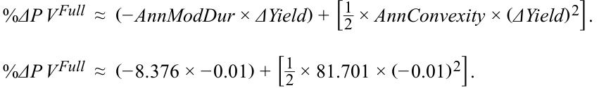
%Δ PVFull ≈ 0.0878 = 8.78%
- The addition of money convexity to the estimated change in the value of the bond position using money duration alone is closest to:
-
A. GBP204,252.
-
B. GBP408,503.
-
C. GBP4,188,220.
- Phần cộng thêm của độ lồi tiền tệ (money convexity) vào mức thay đổi ước tính trong giá trị của vị thế trái phiếu khi chỉ sử dụng thời lượng tiền tệ gần nhất với:
-
A. 204,252 GBP.
-
B. 408,503 GBP.
-
C. 4,188,220 GBP.
Solution:
Lời giải:
A is correct. This question is asking for the money convexity adjustment. First we calculate money convexity:
A là đáp án đúng. Câu hỏi này yêu cầu tính phần điều chỉnh độ lồi tiền tệ (money convexity adjustment). Đầu tiên, chúng ta tính độ lồi tiền tệ:
MoneyCon = AnnConvexity × PVFull .
MoneyCon = 81.701 × GBP50,000,000.
MoneyCon = GBP4,085,033,604.
Then we calculate the money convexity adjustment:
Sau đó, chúng ta tính phần điều chỉnh độ lồi tiền tệ:
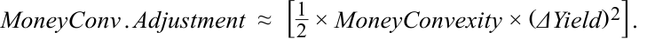
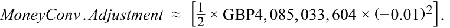
MoneyConv.Adjustment ≈ GBP204,252.
- A EUR100 million bond portfolio contains the following bonds:
- Một danh mục đầu tư trái phiếu trị giá 100 triệu EUR bao gồm các trái phiếu sau:
| Bond | Maturity (yrs.) |
YTM (%) | Market Value | Annualized Modified Duration |
Annualized Convexity |
|---|---|---|---|---|---|
| A | 3 | 2.80% | EUR40,000,000 | 2.858 | 9.752 |
| B | 10 | 3.50% | EUR60,000,000 | 8.376 | 81.701 |
| Trái phiếu (Bond) | Kỳ hạn (năm) (Maturity - yrs.) | YTM (%) | Giá trị Thị trường (Market Value) | Thời lượng Điều chỉnh Năm hóa (Annualized Modified Duration) | Độ lồi Năm hóa (Annualized Convexity) |
|---|---|---|---|---|---|
| A | 3 | 2.80% | 40,000,000 EUR | 2.858 | 9.752 |
| B | 10 | 3.50% | 60,000,000 EUR | 8.376 | 81.701 |
The expected percentage price change of the bond portfolio given a 50 bp increase in yield-to-maturity is closest to:
A. 3.018%.
Phần trăm thay đổi giá kỳ vọng của danh mục đầu tư trái phiếu khi lợi suất đáo hạn tăng 50 bp gần nhất với:
- B. 3.085%.
C. 3.151%.
-
A. 3.018%.
-
B. 3.085%.
-
C. 3.151%.
Solution:
Lời giải:
A is correct. The weights of Bond A and Bond B are 40% and 60%, respectively. As a result, the portfolio weighted-average duration and convexity measures are 6.169 and 52.921, respectively. The expected portfolio percentage price change given a 50 bp increase in YTM is calculated as follows:
A là đáp án đúng. Trọng số của Trái phiếu A và Trái phiếu B lần lượt là 40% và 60%. Do đó, các thước đo thời lượng và độ lồi trung bình có trọng số của danh mục đầu tư lần lượt là 6.169 và 52.921. Phần trăm thay đổi giá kỳ vọng của danh mục đầu tư khi YTM tăng 50 bp được tính như sau:
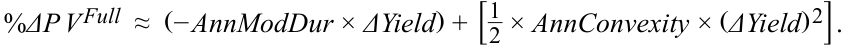
- % ΔP VFull ≈( − 6.169 × 0.005) + [1 2× 52.921 × (0.005)2] . %Δ _PVFull ≈ −3.018%
- Using weighted-average duration and convexity measures to estimate bond portfolio interest rate risk:
-
A. is difficult in practice.
-
B. is the theoretically correct approach.
-
C. assumes a parallel shift in the yield curve.
-
Solution:
- Việc sử dụng các thước đo thời lượng và độ lồi trung bình có trọng số để ước tính rủi ro lãi suất của danh mục đầu tư trái phiếu:
-
A. rất khó thực hiện trong thực tế.
-
B. là phương pháp đúng về mặt lý thuyết.
-
C. giả định một sự dịch chuyển song song (parallel shift) trong đường cong lợi suất.
-
Lời giải:
C is correct. Using the weighted-average duration and convexity measures to estimate bond portfolio interest rate risk is easy in practice, but it is not the theoretically correct approach (using the weighted average of time to receipt of the aggregate cash flows is theoretically correct). It does, however, implicitly assume a parallel shift in the yield curve.
C là đáp án đúng. Việc sử dụng các thước đo thời lượng và độ lồi trung bình có trọng số để ước tính rủi ro lãi suất của danh mục đầu tư trái phiếu rất dễ thực hiện trong thực tế, nhưng đó không phải là phương pháp đúng về mặt lý thuyết (việc sử dụng trung bình có trọng số của thời gian nhận các dòng tiền gộp mới là đúng về mặt lý thuyết). Tuy nhiên, phương pháp này ngầm giả định một sự dịch chuyển song song trong đường cong lợi suất.
BOND CONVEXITY AND CONVEXITY ADJUSTMENT
ĐỘ LỒI CỦA TRÁI PHIẾU VÀ ĐIỀU CHỈNH ĐỘ LỒI (BOND CONVEXITY AND CONVEXITY ADJUSTMENT)
2
2
calculate and interpret convexity and describe the convexity adjustment
- tính toán và diễn giải độ lồi (convexity) và mô tả phần điều chỉnh độ lồi (convexity adjustment)
Interest rate risk, or the sensitivity of a bond’s price to changes in yield, is an important concept used to analyze fixed-income exposures. As a key risk metric, modified duration measures the first-order (linear) effect on a bond’s price change given a yield-to-maturity change. Convexity is a complementary risk metric that measures the second-order (non-linear) effect of yield changes on price for an option-free fixed-rate bond, as shown in Exhibit 1.
Rủi ro lãi suất, hay độ nhạy của giá trái phiếu đối với những thay đổi trong lợi suất, là một khái niệm quan trọng được sử dụng để phân tích mức độ tiếp xúc rủi ro thu nhập cố định. Là một thước đo rủi ro chính, thời lượng điều chỉnh đo lường tác động bậc nhất (tuyến tính – first-order linear) lên mức thay đổi giá của trái phiếu khi có một sự thay đổi trong lợi suất đáo hạn. Độ lồi (Convexity) là một thước đo rủi ro bổ sung đo lường tác động bậc hai (phi tuyến tính – second-order non-linear) của những thay đổi lợi suất lên giá đối với một trái phiếu lãi suất cố định không kèm quyền chọn, như được thể hiện trong Bảng 1.
Exhibit 1: Convexity of an Option-Free Fixed-Rate Bond
Bảng 1: Độ lồi của một Trái phiếu Lãi suất Cố định Không kèm Quyền chọn (Exhibit 1: Convexity of an Option-Free Fixed-Rate Bond)
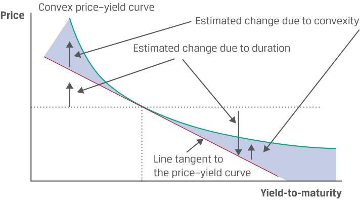
Chú thích hình ảnh: - Trục tung: Giá (Price). - Trục hoành: Lợi suất đáo hạn (Yield-to-maturity). - Các thành phần trên đồ thị: Đường cong giá – lợi suất lồi (Convex price–yield curve), Đường tiếp tuyến với đường cong giá – lợi suất (Line tangent to the price–yield curve), Mức thay đổi ước tính do thời lượng (Estimated change due to duration), và Mức thay đổi ước tính do độ lồi (Estimated change due to convexity – khoảng cách giữa đường cong lồi và đường tiếp tuyến).
The true relationship between a bond’s price and its yield-to-maturity is the curved (convex) line that shows the actual bond price given its market discount rate. Duration (i.e., money duration) estimates the change in the bond price along the straight line tangent to the curved line. For small yield-to-maturity changes, there is little difference between the lines.
Mối quan hệ thực sự giữa giá của một trái phiếu và lợi suất đáo hạn của nó là đường cong (lồi) thể hiện giá trái phiếu thực tế tại một mức lãi suất chiết khấu thị trường nhất định. Thời lượng (tức là thời lượng tiền tệ) ước tính mức thay đổi trong giá trái phiếu dọc theo đường thẳng tiếp tuyến với đường cong. Đối với những thay đổi nhỏ trong lợi suất đáo hạn, có rất ít sự khác biệt giữa hai đường này.
However, for larger yield changes, the difference becomes significant and duration alone is an insufficient risk measure. In such cases, a proper assessment requires capturing the non-linear price effect of convexity. By considering duration and convexity metrics together for relatively large yield changes, the estimated bond prices are substantially closer to the actual bond prices. That is, when including convexity, bond prices rise more when yields decrease and fall less when yields increase than when estimated using duration alone.
Tuy nhiên, đối với những thay đổi lớn hơn về lợi suất, sự khác biệt trở nên đáng kể và chỉ riêng thời lượng là một thước đo rủi ro không đầy đủ. Trong những trường hợp như vậy, một sự đánh giá thỏa đáng đòi hỏi phải nắm bắt được hiệu ứng giá phi tuyến tính của độ lồi. Bằng cách xem xét kết hợp cả hai thước đo thời lượng và độ lồi đối với những thay đổi lợi suất tương đối lớn, giá trái phiếu ước tính sẽ sát với giá trái phiếu thực tế hơn đáng kể. Nghĩa là, khi tính thêm độ lồi, giá trái phiếu tăng nhiều hơn khi lợi suất giảm và giảm ít hơn khi lợi suất tăng so với khi chỉ ước tính bằng thời lượng.
As shown in Equation 1, convexity adds to the estimate of the percentage (full) price change provided when using modified duration by itself, which was used in prior lessons. % ΔP VFull ≈ (− AnnModDur × ΔYield ) + [ 21×_AnnConvexity× (ΔYield) 2] . ~~(1)~~
Như được thể hiện trong Phương trình 1, độ lồi bổ sung vào ước tính phần trăm thay đổi giá (toàn phần) có được khi chỉ sử dụng thời lượng điều chỉnh, vốn đã được sử dụng trong các bài học trước.
The first expression in parentheses is the effect from modified duration. The expression in brackets is the convexity adjustment : the annual convexity statistic, AnnConvexity , times one-half times the change in the yield-to-maturity squared . This term is always positive for an option-free fixed-rate bond, so, as noted, the bond price is higher for either an increase or decrease in yield (see Exhibit 1).
Biểu thức đầu tiên trong dấu ngoặc đơn là tác động từ thời lượng điều chỉnh. Biểu thức trong dấu ngoặc vuông là phần điều chỉnh độ lồi (convexity adjustment): số liệu thống kê độ lồi hàng năm, $\text{AnnConvexity}$, nhân với một phần hai nhân với mức thay đổi trong lợi suất đáo hạn bình phương. Số hạng này luôn mang giá trị dương đối với một trái phiếu lãi suất cố định không kèm quyền chọn, vì vậy, như đã lưu ý, giá trái phiếu ước tính sẽ cao hơn đối với cả trường hợp tăng hoặc giảm lợi suất (xem Bảng 1).
Similar to Macaulay and modified durations, AnnConvexity can be calculated in several ways: (1) using a Microsoft Excel spreadsheet, (2) using an approximation method, and (3) using a closed-form equation derived from calculus. We will now demonstrate methods 1 and 2.
Consider once again BRWA’s five-year, 3.2% (semiannual) coupon bond priced at par for settlement on 15 October 2025 and maturity on 15 October 2030. Exhibit 2 is an interactive spreadsheet in the downloadable Microsoft Excel workbook that shows the calculation of AnnConvexity for this bond; notice that it is very similar to the one used to calculate duration. The difference is the inclusion of a new column (Col. 7) for the following operation (where CF means cash flow) to calculate convexity:
Tương tự như thời lượng Macaulay và thời lượng điều chỉnh, $\text{AnnConvexity}$ có thể được tính theo nhiều cách: (1) sử dụng bảng tính Microsoft Excel, (2) sử dụng phương pháp xấp xỉ, và (3) sử dụng phương trình dạng đóng được suy ra từ phép tính vi phân. Bây giờ chúng ta sẽ minh họa phương pháp 1 và 2.
(Time to receipt of CF ) × (Time to receipt of CF + 1) × (Weight of CF ) × (1 + Periodic YTM )(–Periods per year) .
Hãy xét lại một lần nữa trái phiếu trả coupon 3.2% (bán niên), kỳ hạn 5 năm của BRWA được định giá ngang mệnh giá để thanh toán vào ngày 15 tháng 10 năm 2025 và đáo hạn vào ngày 15 tháng 10 năm 2030. Bảng 2 là một bảng tính tương tác trong sổ làm việc Microsoft Excel có thể tải xuống, cho thấy phép tính $\text{AnnConvexity}$ cho trái phiếu này; hãy lưu ý rằng nó rất giống với bảng tính được sử dụng để tính thời lượng. Sự khác biệt là việc đưa thêm một cột mới (Cột 7) cho phép tính sau đây (trong đó $CF$ có nghĩa là dòng tiền) để tính độ lồi:
Note that the intermediate result of multiplying the first two terms introduces non-linearity (Time to receipt of CF2 ). Dividing the sum of Column 7 (96.95578) by periods per year squared (22 =4) results in an annualized convexity ( AnnConvexity ) statistic of 24.2389.
Lưu ý rằng kết quả trung gian của việc nhân hai số hạng đầu tiên tạo ra tính phi tuyến tính ($\text{Thời gian nhận } CF^2$). Chia tổng của Cột 7 (96.95578) cho bình phương số kỳ mỗi năm ($2^2 = 4$) sẽ cho ra số liệu thống kê độ lồi năm hóa ($\text{AnnConvexity}$) là 24.2389.
Exhibit 2: Convexity Calculation for an Option-Free Fixed-Rate Bond
Bảng 2: Tính toán Độ lồi cho một Trái phiếu Lãi suất Cố định Không kèm Quyền chọn (Exhibit 2: Convexity Calculation for an Option-Free Fixed-Rate Bond)
| BRWA Corporation Five-Year, 3.2% Issuance |
Semiannual Bond at |
|---|---|
| Principal | $300,000,000 |
| Fixed Coupon (%) | 3.20 |
| Periods p.a. | 2 |
| Price (per 100 Par Value) | 100 |
| Yield-to-Maturity (%) | 3.20 |
| Trái phiếu Bán niên 3.2%, Kỳ hạn 5 Năm của Tập đoàn BRWA tại Ngày Phát hành | Giá trị |
|---|---|
| Vốn gốc (Principal) | $300,000,000 |
| Lãi suất Coupon Cố định (%) (Fixed Coupon %) | 3.20 |
| Số kỳ mỗi năm (Periods p.a.) | 2 |
| Giá (trên 100 Mệnh giá) (Price per 100 Par Value) | 100 |
| Lợi suất Đáo hạn (%) (Yield-to-Maturity %) | 3.20 |
| Col. 1 | Col. 2 | Col. 3 | Col. 4 | Col. 5 | Col. 6 = Col. 2 × Col. 5 |
Col. 7 = Col. 2 × (Col. 2 + 1) × Col. 5 × (1 + YTM/2)-2 |
|---|---|---|---|---|---|---|
| Period | Time to Receipt | Cash Flow |
Present Value |
Weight | Time to Receipt × Weight |
Convexity of Cash Flows |
| 1 | 1.0 | 1.6 | 1.5748 | 0.0157 | 0.0157 | 0.0305 |
| 2 | 2.0 | 1.6 | 1.5500 | 0.0155 | 0.0310 | 0.0901 |
| 3 | 3.0 | 1.6 | 1.5256 | 0.0153 | 0.0458 | 0.1774 |
| 4 | 4.0 | 1.6 | 1.5016 | 0.0150 | 0.0601 | 0.2909 |
| 5 | 5.0 | 1.6 | 1.4779 | 0.0148 | 0.0739 | 0.4295 |
| 6 | 6.0 | 1.6 | 1.4546 | 0.0145 | 0.0873 | 0.5919 |
| 7 | 7.0 | 1.6 | 1.4317 | 0.0143 | 0.1002 | 0.7767 |
| 8 | 8.0 | 1.6 | 1.4092 | 0.0141 | 0.1127 | 0.9829 |
| 9 | 9.0 | 1.6 | 1.3870 | 0.0139 | 0.1248 | 1.2093 |
| 10 | 10.0 | 101.6 | 86.6875 | 0.8669 | 8.6688 | 92.3766 |
| 100.0000 | 1.0000 | 9.3203 | 96.9558 | |||
| Annualized Macaulay D | uration and Convexity | 4.6601 | 24.2389 |
| Cột 1 | Cột 2 | Cột 3 | Cột 4 | Cột 5 | Cột 6 = Cột 2 × Cột 5 | Cột 7 = Cột 2 × (Cột 2 + 1) × Cột 5 × (1 + YTM/2)⁻² |
|---|---|---|---|---|---|---|
| Kỳ (Period) | Thời gian nhận (Time to Receipt) | Dòng tiền (Cash Flow) | Giá trị hiện tại (Present Value) | Trọng số (Weight) | Thời gian nhận × Trọng số (Time to Receipt × Weight) | Độ lồi của Dòng tiền (Convexity of Cash Flows) |
| 1 | 1.0 | 1.6 | 1.5748 | 0.0157 | 0.0157 | 0.0305 |
| 2 | 2.0 | 1.6 | 1.5500 | 0.0155 | 0.0310 | 0.0901 |
| 3 | 3.0 | 1.6 | 1.5256 | 0.0153 | 0.0458 | 0.1774 |
| 4 | 4.0 | 1.6 | 1.5016 | 0.0150 | 0.0601 | 0.2909 |
| 5 | 5.0 | 1.6 | 1.4779 | 0.0148 | 0.0739 | 0.4295 |
| 6 | 6.0 | 1.6 | 1.4546 | 0.0145 | 0.0873 | 0.5919 |
| 7 | 7.0 | 1.6 | 1.4317 | 0.0143 | 0.1002 | 0.7767 |
| 8 | 8.0 | 1.6 | 1.4092 | 0.0141 | 0.1127 | 0.9829 |
| 9 | 9.0 | 1.6 | 1.3870 | 0.0139 | 0.1248 | 1.2093 |
| 10 | 10.0 | 101.6 | 86.6875 | 0.8669 | 8.6688 | 92.3766 |
| 100.0000 | 1.0000 | 9.3203 | 96.9558 | |||
| Thời lượng Macaulay và Độ lồi Năm hóa (Annualized Macaulay Duration and Convexity) | 4.6601 | 24.2389 |
Exhibit 2 can also be viewed as a spreadsheet on the candidate learning ecosystem online in the downloadable Microsoft Excel workbook.
Bảng 2 cũng có thể được xem dưới dạng bảng tính trên hệ sinh thái học tập dành cho ứng viên trực tuyến trong sổ làm việc Microsoft Excel có thể tải xuống.
Alternatively, Equation 2 can be used to approximate annualized convexity ( ApproxCon ). This approach is useful for bonds with uncertain cash flows, such as those with contingency features and default risk, which will be explored in later lessons. Note that this equation uses the same inputs as approximating modified duration.
Ngoài ra, Phương trình 2 có thể được sử dụng để xấp xỉ độ lồi năm hóa ($\text{ApproxCon}$). Phương pháp này hữu ích đối với các trái phiếu có dòng tiền không chắc chắn, chẳng hạn như những trái phiếu có điều khoản dự phòng và rủi ro vỡ nợ, sẽ được khám phá trong các bài học sau. Lưu ý rằng phương trình này sử dụng cùng các thông số đầu vào như khi xấp xỉ thời lượng điều chỉnh.
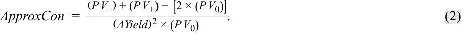
For BRWA’s bond, first raise the annual yield-to-maturity by 5 bps, from 3.20% to 3.25%, and determine PV +. Next, lower it by 5 bps, to 3.15%, and determine PV –. These are the new full prices (original price is PV 0 = 100.00). Using Excel’s PRICE function,
Đối với trái phiếu của BRWA, đầu tiên hãy tăng lợi suất đáo hạn hàng năm thêm 5 bps, từ 3.20% lên 3.25%, và xác định $PV_+$. Tiếp theo, giảm lợi suất đi 5 bps, xuống 3.15%, và xác định $PV_-$. Đây là các mức giá toàn phần mới (giá ban đầu là $PV_0 = 100.00$). Sử dụng hàm PRICE của Excel,
PRICE( settlement, maturity, rate, yield, redemption, frequency, [basis] ),
PRICE(settlement, maturity, rate, yield, redemption, frequency, [basis]),
we have the following:
chúng ta có như sau:
PV + = PRICE(DATE(2025,10,15),DATE(2030,10,15),0.032,0.0325,100,2,0) = 99.770965.
PV – = PRICE(DATE(2025,10,15),DATE(2030,10,15),0.032,0.0315,100,2,0) = 100.229641.
Applying Equation 2, ApproxCon is estimated to be 24.23896, which is a very close approximation to the bond’s AnnConvexity of 24.23895 we calculated in Exhibit 2.
Áp dụng Phương trình 2, $\text{ApproxCon}$ được ước tính là 24.23896, là một giá trị xấp xỉ rất sát với $\text{AnnConvexity}$ của trái phiếu là 24.23895 mà chúng ta đã tính trong Bảng 2.
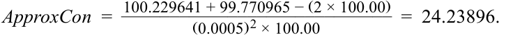
Bond features that lead to greater convexity are the same as for duration. A fixed-rate bond will have greater convexity:
Các đặc điểm của trái phiếu dẫn đến độ lồi lớn hơn cũng giống như đối với thời lượng. Một trái phiếu lãi suất cố định sẽ có độ lồi lớn hơn khi:
■ the longer its time-to-maturity,
- thời gian đáo hạn càng dài,
-
the lower its coupon rate, and
-
the lower its yield-to-maturity.
-
lãi suất coupon càng thấp, và
-
lợi suất đáo hạn càng thấp.
Another factor is the dispersion of cash flows, meaning the degree to which payments are spread out over time. For two bonds with the same duration, the one with the greater dispersion of cash flows has greater convexity. The positive attributes of convexity for an investor are shown in Exhibit 3.
Một yếu tố khác là độ phân tán của các dòng tiền (dispersion of cash flows), nghĩa là mức độ mà các khoản thanh toán được trải rộng theo thời gian. Đối với hai trái phiếu có cùng thời lượng, trái phiếu nào có độ phân tán dòng tiền lớn hơn sẽ có độ lồi lớn hơn. Các thuộc tính tích cực của độ lồi đối với một nhà đầu tư được thể hiện trong Bảng 3.
Exhibit 3: Positive Attributes of Bond Convexity on an Option-Free Bond
Bảng 3: Các Thuộc tính Tích cực của Độ lồi Trái phiếu đối với một Trái phiếu Không kèm Quyền chọn (Exhibit 3: Positive Attributes of Bond Convexity on an Option-Free Bond)
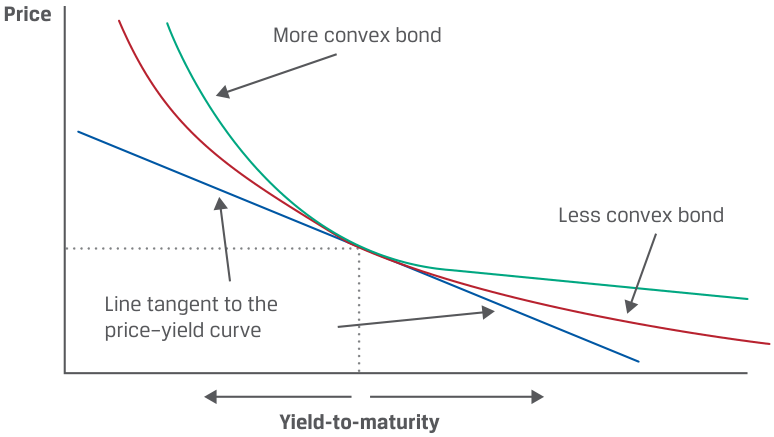
Chú thích hình ảnh: - Trục tung: Giá (Price). - Trục hoành: Lợi suất đáo hạn (Yield-to-maturity). - Các đường biểu diễn: Trái phiếu có độ lồi lớn hơn (More convex bond – nằm phía trên), Trái phiếu có độ lồi nhỏ hơn (Less convex bond – nằm ở giữa), và Đường tiếp tuyến với đường cong giá – lợi suất (Line tangent to the price–yield curve – nằm phía dưới cùng).
The two bonds depicted in Exhibit 3 are assumed to have the same price, maturity, yield-to-maturity, and modified duration, so they share the same line tangent to their price–yield curves. The benefit of greater convexity arises when their yields change significantly. For the same decrease in yield-to-maturity, the more convex bond appreciates more in price, while for the same increase in yield-to-maturity, the more convex bond depreciates less in price. Consequently, the more convex bond outperforms the less convex bond in both falling and rising yield environments, so it is less risky for investors.
Hai trái phiếu được mô tả trong Bảng 3 được giả định là có cùng mức giá, kỳ hạn, lợi suất đáo hạn và thời lượng điều chỉnh, do đó chúng có chung đường tiếp tuyến với đường cong giá – lợi suất của mình. Lợi ích của độ lồi lớn hơn phát sinh khi lợi suất của chúng thay đổi đáng kể. Đối với cùng một mức giảm trong lợi suất đáo hạn, trái phiếu có độ lồi lớn hơn tăng giá nhiều hơn, trong khi đối với cùng một mức tăng trong lợi suất đáo hạn, trái phiếu có độ lồi lớn hơn giảm giá ít hơn. Do đó, trái phiếu có độ lồi lớn hơn có thành quả vượt trội hơn so với trái phiếu có độ lồi nhỏ hơn trong cả môi trường lợi suất giảm lẫn môi trường lợi suất tăng, vì vậy nó ít rủi ro hơn đối với các nhà đầu tư.
This conclusion assumes the difference in convexity is not reflected in the price of the more convex bond. If it is priced in, the more convex bond would have a higher price (and lower yield-to-maturity). The key point is that convexity is valuable to investors for risk reduction, so they must pay for it.
Kết luận này giả định rằng sự khác biệt về độ lồi chưa được phản ánh vào giá của trái phiếu có độ lồi lớn hơn. Nếu nó đã được định giá vào trong giá (priced in), trái phiếu có độ lồi lớn hơn sẽ có mức giá cao hơn (và lợi suất đáo hạn thấp hơn). Điểm mấu chốt là độ lồi có giá trị đối với các nhà đầu tư trong việc giảm thiểu rủi ro, vì vậy họ phải trả giá cho nó.
EXAMPLE 1
VÍ DỤ 1 (EXAMPLE 1)
Duration and Convexity of 30-Year Romanian Bond
Thời lượng và Độ lồi của Trái phiếu Romania Kỳ hạn 30 Năm (Duration and Convexity of 30-Year Romanian Bond)
A 30-year bond issued by the government of Romania has a coupon rate of 4.625% (paid annually) and currently trades at a yield-to-maturity of 4.75% on 15 October 2025, with a maturity date of 15 October 2055.
Một trái phiếu kỳ hạn 30 năm do chính phủ Romania phát hành có lãi suất coupon là 4.625% (trả hàng năm) và hiện đang giao dịch ở mức lợi suất đáo hạn là 4.75% vào ngày 15 tháng 10 năm 2025, với ngày đáo hạn là 15 tháng 10 năm 2055.
1. Use Excel’s PRICE function to calculate ApproxModDur and ApproxCon using a 5 bp increase and decrease in yield-to-maturity.
1. Sử dụng hàm PRICE của Excel để tính $\text{ApproxModDur}$ và $\text{ApproxCon}$ bằng cách sử dụng mức tăng và giảm 5 bp trong lợi suất đáo hạn.
2. Compare and interpret the duration and convexity measures of the 30-year Romanian bond and BRWA’s 5-year bond.
2. So sánh và diễn giải các thước đo thời lượng và độ lồi của trái phiếu Romania kỳ hạn 30 năm và trái phiếu kỳ hạn 5 năm của BRWA.
To find ApproxModDur and ApproxCon , we must first calculate PV 0 and then, using a 5 bp increase and decrease in YTM, calculate PV + and PV –:
Để tìm $\text{ApproxModDur}$ và $\text{ApproxCon}$, trước tiên chúng ta phải tính $PV_0$ và sau đó, sử dụng mức tăng và giảm 5 bp trong YTM, tính $PV_+$ và $PV_-$:
= 98.022448.
PV + = PRICE(DATE(2025,10,15),DATE(2055,10,15),0.04625,0.0480,100,1,0) = 97.247386.
So sánh Thời lượng và Độ lồi: Trái phiếu Romania và BRWA (Duration and Convexity Comparison: Romanian and BRWA Bonds)
PV – = PRICE(DATE(2025,10,15),DATE(2055,10,15),0.04625,0.0470,100,1,0) = 98.806567. __ ApproxModDur = 2 ×98.806567 − 97.247386( 0.0005) × 98.022448= 15.90637. ____ ApproxCon =98.806567 + 97.247386 − (2 × 98.022448) = 369.58881.( 0.0005)2 × 98.022448
Duration and Convexity Comparison: Romanian and BRWA Bonds
| Trái phiếu (Bond) | Kỳ hạn (Năm) (Maturity - Years) | Lãi suất Coupon (%) (Coupon %) | YTM (%) | ApproxModDur | ApproxCon |
|---|---|---|---|---|---|
| Romania | 30 | 4.625 (Trả hàng năm – Annual Pay) | 4.75 | 15.90637 | 369.64203 |
| BRWA | 5 | 3.20 (Bán niên – Semi-Annual) | 3.20 | 4.58676 | 24.23896 |
| Bond | Maturity (Years) |
Coupon (%) | YTM (%) | Approx- ModDur |
ApproxCon |
|---|---|---|---|---|---|
| Romanian | 30 | 4.625 Annual Pay |
4.75 | 15.90637 | 369.64203 |
| BRWA | 5 | 3.20 Semi-Annual |
3.20 | 4.58676 | 24.23896 |
Thời lượng và độ lồi của trái phiếu Romania cao hơn đáng kể so với trái phiếu của BRWA chủ yếu là do thời gian đáo hạn dài hơn rất nhiều (30 năm so với 5 năm), yếu tố này lấn át cả mức lãi suất coupon và YTM cao hơn của trái phiếu Romania (những đặc điểm vốn làm giảm thời lượng và độ lồi).
The duration and convexity of the Romanian bond are significantly higher than BRWA’s bond primarily due to its much longer time-to-maturity (30 years versus 5 years), which outweighs the Romanian bond’s higher coupon rate and YTM, features that decrease duration and convexity.
BỘ CÂU HỎI (QUESTION SET)
QUESTION SET
Các câu hỏi 1–5 liên quan đến thông tin sau đây.
Questions 1–5 relate to the following information.
| Trái phiếu (Bond) | Ngày Phát hành (Issuance Date) | Ngày Đáo hạn (Maturity) | Lãi suất Coupon Trả Hàng năm (%) (Annual Pay Coupon %) | YTM (%) |
|---|---|---|---|---|
| Trái phiếu X | 7/15/25 | 7/15/34 | 2.25 | 2.25 |
| Trái phiếu Y | 7/15/25 | 7/15/35 | 5.33 | 2.34 |
| Issuance | Annual Pay Cou- | |||
|---|---|---|---|---|
| Bond | Date | Maturity | pon (%) | YTM (%) |
| Bond X | 7/15/25 | 7/15/34 | 2.25 | 2.25 |
| Bond Y | 7/15/25 | 7/15/35 | 5.33 | 2.34 |
- Calculate the modified duration and convexity for Bond X at issuance.
- Tính thời lượng điều chỉnh và độ lồi cho Trái phiếu X tại thời điểm phát hành.
Solution:
Lời giải:
| Bond X | ||
|---|---|---|
| Fixed Coupon (%) | 2.25 | |
| Periods p.a. | 1 | |
| Price (per 100 Par Value) | 100 | |
| Yield-to-Maturity (%) | 2.25 |
| Đặc điểm | Trái phiếu X (Bond X) |
|---|---|
| Lãi suất Coupon Cố định (%) (Fixed Coupon %) | 2.25 |
| Số kỳ mỗi năm (Periods p.a.) | 1 |
| Giá (trên 100 Mệnh giá) (Price per 100 Par Value) | 100 |
| Lợi suất Đáo hạn (%) (Yield-to-Maturity %) | 2.25 |
| Col. 1 | Col. 2 | Col. 3 | Col. 4 | Col. 5 | Col. 6 = Col. 2 × Col. 5 |
Col. 7 = Col. 2 × (Col. 2 + 1) × Col. 5 × (1 + YTM)–1 |
|---|---|---|---|---|---|---|
| Period | Time to Receipt |
Cash Flow |
Present Value | Weight | Time to Receipt × Weight |
Convexity of Cash Flows |
| 1 | 1.0 | 2.25 | 2.200489 | 0.02200 | 0.02200 | 0.04304 |
| 2 | 2.0 | 2.25 | 2.152067 | 0.02152 | 0.04304 | 0.12628 |
| 3 | 3.0 | 2.25 | 2.104711 | 0.02105 | 0.06314 | 0.24701 |
| 4 | 4.0 | 2.25 | 2.058398 | 0.02058 | 0.08234 | 0.40262 |
| 5 | 5.0 | 2.25 | 2.013103 | 0.02013 | 0.10066 | 0.59064 |
| 6 | 6.0 | 2.25 | 1.968805 | 0.01969 | 0.11813 | 0.80870 |
| 7 | 7.0 | 2.25 | 1.925481 | 0.01925 | 0.13478 | 1.05454 |
| 8 | 8.0 | 2.25 | 1.883111 | 0.01883 | 0.15065 | 1.32601 |
| 9 | 9.0 | 102.25 | 83.693835 | 0.83694 | 7.53245 | 73.66694 |
| 100.0000 | 1.00000 | 8.24718 | 78.26579 | |||
| acaulay Duratio | n and Convexity | 8.24718 | 78.26579 | |||
| i ation | 8.06571 | — |
| Cột 1 | Cột 2 | Cột 3 | Cột 4 | Cột 5 | Cột 6 = Cột 2 × Cột 5 | Cột 7 = Cột 2 × (Cột 2 + 1) × Cột 5 × (1 + YTM)⁻¹ |
|---|---|---|---|---|---|---|
| Kỳ (Period) | Thời gian nhận (Time to Receipt) | Dòng tiền (Cash Flow) | Giá trị hiện tại (Present Value) | Trọng số (Weight) | Thời gian nhận × Trọng số (Time to Receipt × Weight) | Độ lồi của Dòng tiền (Convexity of Cash Flows) |
| 1 | 1.0 | 2.25 | 2.200489 | 0.02200 | 0.02200 | 0.04304 |
| 2 | 2.0 | 2.25 | 2.152067 | 0.02152 | 0.04304 | 0.12628 |
| 3 | 3.0 | 2.25 | 2.104711 | 0.02105 | 0.06314 | 0.24701 |
| 4 | 4.0 | 2.25 | 2.058398 | 0.02058 | 0.08234 | 0.40262 |
| 5 | 5.0 | 2.25 | 2.013103 | 0.02013 | 0.10066 | 0.59064 |
| 6 | 6.0 | 2.25 | 1.968805 | 0.01969 | 0.11813 | 0.80870 |
| 7 | 7.0 | 2.25 | 1.925481 | 0.01925 | 0.13478 | 1.05454 |
| 8 | 8.0 | 2.25 | 1.883111 | 0.01883 | 0.15065 | 1.32601 |
| 9 | 9.0 | 102.25 | 83.693835 | 0.83694 | 7.53245 | 73.66694 |
| 100.0000 | 1.00000 | 8.24718 | 78.26579 | |||
| Thời lượng Macaulay và Độ lồi Năm hóa (Annualized Macaulay Duration and Convexity) | 8.24718 | 78.26579 | ||||
| Thời lượng Điều chỉnh (Modified Duration) | 8.06571 | — |
Annualized Macaulay Duration and Convexity Modified Duration
- Calculate ApproxModDur and ApproxCon for Bond Y using a 5 bp increase and decrease in the yield-to-maturity.
- Tính $\text{ApproxModDur}$ và $\text{ApproxCon}$ cho Trái phiếu Y bằng cách sử dụng mức tăng và giảm 5 bp trong lợi suất đáo hạn.
Solution:
Lời giải:
To find ApproxModDur and ApproxCon for Bond Y, we must first calculate PV 0, PV +, and PV –.
Để tìm $\text{ApproxModDur}$ và $\text{ApproxCon}$ cho Trái phiếu Y, trước tiên chúng ta phải tính $PV_0$, $PV_+$, và $PV_-$.
PV 0 = PRICE(DATE(2025,7,15),DATE(2035,7,15),0.0533,0.0234,100,1,0) = 126.386358.
PV+ = PRICE(DATE(2025,7,15),DATE(2035,7,15),0.0533,0.0239,100,1,0) = 125.877943.
PV – = PRICE(DATE(2025,7,15),DATE(2035,7,15),0.0533,0.0229,100,1,0) = 126.897325.
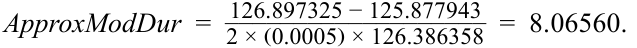
_______ ApproxCon_ =126.897325 + 125.877943 − (2 × 126.386358) = 80.76704.( 0.0005)2 × 126.386358
- Compare and interpret the risk measures from Questions 1 and 2 relative to a small anticipated change in yield-to-maturity.
- So sánh và diễn giải các thước đo rủi ro từ Câu hỏi 1 và 2 đối với một sự thay đổi nhỏ dự kiến trong lợi suất đáo hạn.
Solution:
Lời giải:
For a small change in YTM, modified duration is a reasonable estimate of the price change risk of a bond. Since the modified duration (or ApproxModDur ) values of Bond X and Bond Y are virtually identical (8.06571 and 8.06560, respectively), the estimated price change based on a small change in YTM (either positive or negative) would be nearly identical for each bond.
Đối với một sự thay đổi nhỏ trong YTM, thời lượng điều chỉnh là một ước tính hợp lý về rủi ro thay đổi giá của một trái phiếu. Vì giá trị thời lượng điều chỉnh (hoặc $\text{ApproxModDur}$) của Trái phiếu X và Trái phiếu Y gần như giống hệt nhau (lần lượt là 8.06571 và 8.06560), mức thay đổi giá ước tính dựa trên một sự thay đổi nhỏ trong YTM (dù dương hay âm) sẽ gần như giống hệt nhau đối với mỗi trái phiếu.
- Compare and interpret the risk measures from Questions 1 and 2 relative to a large anticipated change in yield-to-maturity.
- So sánh và diễn giải các thước đo rủi ro từ Câu hỏi 1 và 2 đối với một sự thay đổi lớn dự kiến trong lợi suất đáo hạn.
Solution:
Lời giải:
- For a large change in YTM, duration alone does not capture the expected price change of a bond. The convexity adjustment accounts for the non-linear nature of the relationship of price to YTM. Since both bonds have virtually the same duration, the higher convexity of Bond Y should result in a smaller percentage drop given a large increase in YTM and a larger percentage increase given a large decrease in YTM. In either case, Bond Y should perform better than Bond X for a large change in YTM.
- Compare and interpret each of the following features for its effect on the convexity of Bond X versus Bond Y:
-
a. Maturity
-
b. Coupon rate
c. YTM
- Đối với một sự thay đổi lớn trong YTM, chỉ riêng thời lượng không nắm bắt được mức thay đổi giá kỳ vọng của một trái phiếu. Phần điều chỉnh độ lồi tính đến bản chất phi tuyến tính của mối quan hệ giữa giá và YTM. Vì cả hai trái phiếu có thời lượng gần như bằng nhau, độ lồi cao hơn của Trái phiếu Y sẽ dẫn đến mức sụt giảm phần trăm nhỏ hơn khi có một mức tăng lớn trong YTM và mức tăng phần trăm lớn hơn khi có một mức giảm lớn trong YTM. Trong cả hai trường hợp, Trái phiếu Y đều sẽ hoạt động tốt hơn Trái phiếu X đối với một sự thay đổi lớn trong YTM.
- So sánh và diễn giải từng đặc điểm sau đây về tác động của nó lên độ lồi của Trái phiếu X so với Trái phiếu Y:
-
a. Kỳ hạn (Maturity)
-
b. Lãi suất coupon (Coupon rate)
-
c. YTM
Solution:
Lời giải:
-
a. Bond Y has a longer maturity than Bond X (10 years versus 9 years), which would increase Bond Y’s convexity relative to Bond X.
-
b. Bond X has a lower coupon rate compared to Bond Y (2.25% versus
-
5.33%), which would increase Bond X’s convexity relative to Bond Y.
-
c. Bond X has a lower YTM compared to Bond Y (2.25% versus 2.34%), which would increase Bond X’s convexity relative to Bond Y.
-
a. Trái phiếu Y có kỳ hạn dài hơn Trái phiếu X (10 năm so với 9 năm), điều này sẽ làm tăng độ lồi của Trái phiếu Y so với Trái phiếu X.
-
b. Trái phiếu X có lãi suất coupon thấp hơn so với Trái phiếu Y (2.25% so với 5.33%), điều này sẽ làm tăng độ lồi của Trái phiếu X so với Trái phiếu Y.
-
c. Trái phiếu X có YTM thấp hơn so với Trái phiếu Y (2.25% so với 2.34%), điều này sẽ làm tăng độ lồi của Trái phiếu X so với Trái phiếu Y.
BOND RISK AND RETURN USING DURATION AND CONVEXITY
RỦI RO VÀ TỶ SUẤT SINH LỢI CỦA TRÁI PHIẾU SỬ DỤNG THỜI LƯỢNG VÀ ĐỘ LỒI (BOND RISK AND RETURN USING DURATION AND CONVEXITY)
calculate the percentage price change of a bond for a specified change in yield, given the bond’s duration and convexity
- tính toán phần trăm thay đổi giá của một trái phiếu đối với một mức thay đổi xác định trong lợi suất, khi biết thời lượng (duration) và độ lồi (convexity) của trái phiếu đó
We now show how to estimate the percentage price change of a bond for a specified yield change, given the bond’s duration and convexity. As we will show, such an estimate is substantially closer to the bond’s actual price change than if estimated using duration alone, allowing for more efficient risk management.
Bây giờ chúng ta sẽ chỉ ra cách ước tính phần trăm thay đổi giá của một trái phiếu đối với một mức thay đổi lợi suất xác định, khi biết thời lượng và độ lồi của trái phiếu đó. Như chúng ta sẽ thấy, một ước tính như vậy sát với mức thay đổi giá thực tế của trái phiếu hơn đáng kể so với khi chỉ ước tính bằng thời lượng, cho phép quản lý rủi ro hiệu quả hơn.
Continuing with our focus on BRWA’s five-year, 3.2% (semiannual) coupon bond priced at par for settlement on 15 October 2025 and maturity on 15 October 2030, if its yield-to-maturity changes by ±100 bps from 3.20%, then the actual prices, using Excel’s PRICE function, would be as follows:
Tiếp tục tập trung vào trái phiếu trả coupon 3.2% (bán niên), kỳ hạn 5 năm của BRWA được định giá ngang mệnh giá để thanh toán vào ngày 15 tháng 10 năm 2025 và đáo hạn vào ngày 15 tháng 10 năm 2030, nếu lợi suất đáo hạn của nó thay đổi $\pm 100\text{ bps}$ từ mức 3.20%, thì các mức giá thực tế, sử dụng hàm PRICE của Excel, sẽ như sau:
PV + = PRICE(DATE(2025,10,15),DATE(2030,10,15),0.032,0.0420,100,2,0) = 95.53212.
PV – = PRICE(DATE(2025,10,15),DATE(2030,10,15),0.032,0.0220,100,2,0) = 104.71035.
So, the actual price–yield relationship for this bond is as follows:
Do đó, mối quan hệ giá – lợi suất thực tế của trái phiếu này như sau:
-
100 bp increase in yield (4.20%): Price = 95.53212; %∆ PVFull = –4.46788%.
-
100 bp decrease in yield (2.20%): Price = 104.71035; %∆ PVFull = 4.71035%.
-
Lợi suất tăng 100 bp (4.20%): Giá $= 95.53212$; $\%\Delta PV^{\text{Full}} = -4.46788\%$.
-
Lợi suất giảm 100 bp (2.20%): Giá $= 104.71035$; $\%\Delta PV^{\text{Full}} = 4.71035\%$.
The modified duration for this bond was previously found to be 4.58676, so a 100 bp increase (decrease) in yield-to-maturity results in %∆ PVFull ≈ –4.58676% (4.58676%).
Thời lượng điều chỉnh của trái phiếu này trước đây đã được tìm ra là 4.58676, vì vậy mức tăng (giảm) 100 bp trong lợi suất đáo hạn dẫn đến $\%\Delta PV^{\text{Full}} \approx -4.58676\%$ ($4.58676\%$).
We now show the enhanced precision and risk reduction achieved by adding the convexity adjustment to the duration estimate when determining the BRWA bond’s percentage price changes. Using Equation 1 and the AnnConvexity metric, for ±100 bp changes in yield-to-maturity (from 3.20%), we have the following:
Bây giờ chúng ta sẽ cho thấy độ chính xác được nâng cao và sự giảm thiểu rủi ro đạt được bằng cách cộng thêm phần điều chỉnh độ lồi vào ước tính thời lượng khi xác định phần trăm thay đổi giá của trái phiếu BRWA. Sử dụng Phương trình 1 và thước đo $\text{AnnConvexity}$, đối với các mức thay đổi $\pm 100\text{ bp}$ trong lợi suất đáo hạn (từ mức 3.20%), chúng ta có như sau:
%∆ PVFull ≈ (–4.58676 × 0.0100) + [½ × 24.23895 × (0.0100)2 ] = –4.46556%.
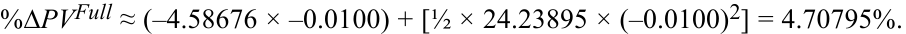
Exhibit 4 compares the estimated percentage changes in BRWA’s bond prices for ±100 bp changes in yield using duration alone and using duration plus convexity against the exact changes from Excel’s PRICE function. It is clear that enhanced precision is achieved by adding the convexity adjustment, because the percentage price difference is less than ¼ of a basis point by adding convexity versus about 12 bps with duration alone. Note that this difference would be substantially greater for larger changes in yield or for longer-maturity or lower-coupon bonds.
Bảng 4 so sánh phần trăm thay đổi ước tính trong giá trái phiếu của BRWA đối với các mức thay đổi $\pm 100\text{ bp}$ trong lợi suất khi chỉ sử dụng thời lượng và khi sử dụng thời lượng cộng với độ lồi so với các mức thay đổi chính xác từ hàm PRICE của Excel. Rõ ràng là độ chính xác đã được nâng cao khi cộng thêm phần điều chỉnh độ lồi, bởi vì chênh lệch phần trăm giá chỉ chưa đến $1/4$ điểm cơ bản khi cộng thêm độ lồi so với khoảng 12 bps khi chỉ dùng thời lượng. Lưu ý rằng sự khác biệt này sẽ lớn hơn đáng kể đối với những thay đổi lớn hơn về lợi suất hoặc đối với các trái phiếu có kỳ hạn dài hơn hoặc lãi suất coupon thấp hơn.
Exhibit 4: Using Duration and Convexity to Estimate Bond Price Changes
Bảng 4: Sử dụng Thời lượng và Độ lồi để Ước tính Thay đổi Giá Trái phiếu (Exhibit 4: Using Duration and Convexity to Estimate Bond Price Changes)
| Change in Bond Yield |
Actual %∆PVFull |
Estimated %∆PVFull Using ModDur |
Difference from Actual Change |
Estimated %∆PVFull Using ModDur + Convexity |
Difference from Actual Change |
|---|---|---|---|---|---|
| + 100 bps | –4.46788 | –4.58676 | –0.11887 | –4.46556 | 0.00232 |
| – 100 bps | 4.71035 | 4.58676 | –0.12359 | 4.70795 | –0.00239 |
| Thay đổi trong Lợi suất Trái phiếu (Change in Bond Yield) | Thực tế (Actual) %∆PVFull | Ước tính %∆PVFull Sử dụng ModDur | Chênh lệch so với Thay đổi Thực tế (Difference from Actual Change) | Ước tính %∆PVFull Sử dụng ModDur + Độ lồi (Convexity) | Chênh lệch so với Thay đổi Thực tế (Difference from Actual Change) |
|---|---|---|---|---|---|
| + 100 bps | –4.46788 | –4.58676 | –0.11887 | –4.46556 | 0.00232 |
| – 100 bps | 4.71035 | 4.58676 | –0.12359 | 4.70795 | –0.00239 |
Recall that money duration indicates the first-order effect on the full price of a bond in currency units given a change in yield-to-maturity. Money convexity ( MoneyCon ) captures the second-order effect in currency terms and is the annual convexity multiplied by the full price, as in Equation 3.
Hãy nhớ lại rằng thời lượng tiền tệ cho biết tác động bậc nhất lên giá toàn phần của một trái phiếu tính bằng đơn vị tiền tệ khi có sự thay đổi trong lợi suất đáo hạn. Độ lồi tiền tệ (Money convexity – $\text{MoneyCon}$) nắm bắt tác động bậc hai tính theo đơn vị tiền tệ và bằng độ lồi hàng năm nhân với giá toàn phần, như trong Phương trình 3.
MoneyCon = AnnConvexity × PVFull . ~~(3)~~
Similar to estimating the percentage change in a bond’s full price, MoneyDur and MoneyCon are combined to achieve a more accurate, thus less risky, estimate of the change in a bond’s full price, as shown in Equation 4.
Tương tự như việc ước tính phần trăm thay đổi trong giá toàn phần của trái phiếu, $\text{MoneyDur}$ và $\text{MoneyCon}$ được kết hợp với nhau để đạt được ước tính chính xác hơn, và do đó ít rủi ro hơn, về mức thay đổi trong giá toàn phần của trái phiếu, như được thể hiện trong Phương trình 4.
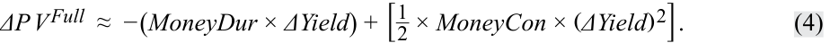
For a money convexity example, consider again BRWA’s five-year, 3.2% semiannual coupon bond, settling 15 October 2025, maturing 15 October 2030, and yielding 3.2%—thus, priced at par. We saw previously that annual modified duration and annual convexity for this bond are 4.58676 and 24.23895, respectively.
Để lấy ví dụ về độ lồi tiền tệ, hãy xét lại trái phiếu trả coupon bán niên 3.2%, kỳ hạn 5 năm của BRWA, thanh toán ngày 15 tháng 10 năm 2025, đáo hạn ngày 15 tháng 10 năm 2030, và có lợi suất 3.2%—do đó được định giá ngang mệnh giá. Trước đây chúng ta đã thấy rằng thời lượng điều chỉnh hàng năm và độ lồi hàng năm của trái phiếu này lần lượt là 4.58676 và 24.23895.
Suppose the investor has a position in the bond with a par value of USD100 million and the yield-to-maturity increases by 100 bps. We saw earlier that the bond’s price declines to 95.53212, so the market value of the position decreases to $95,532,116 (= $100,000,000 × 0.9553212), a decline of $4,467,884.
Giả sử nhà đầu tư nắm giữ một vị thế trái phiếu có mệnh giá là 100 triệu USD và lợi suất đáo hạn tăng 100 bps. Trước đó chúng ta đã thấy rằng giá của trái phiếu giảm xuống 95.53212, vì vậy giá trị thị trường của vị thế giảm xuống còn $\$95,532,116$ ($= \$100,000,000 \times 0.9553212$), tức là giảm $\$4,467,884$.
Estimating the market value change using MoneyDur alone results in a larger decline, $4,586,759 (= $458,675,875 × 0.0100), a difference of $118,875.
Việc ước tính mức thay đổi giá trị thị trường chỉ bằng $\text{MoneyDur}$ dẫn đến mức giảm lớn hơn, $\$4,586,759$ ($= \$458,675,875 \times 0.0100$), chênh lệch $\$118,875$.
However, using Equation 3, the MoneyCon for this position is $2,423,894,503 (= 24.23895 × $100,000,000), and if we apply Equation 4, which uses both MoneyDur and MoneyCon , to estimate the market value change, the result is a decline of –$4,465,564, as follows:
Tuy nhiên, sử dụng Phương trình 3, $\text{MoneyCon}$ cho vị thế này là $\$2,423,894,503$ ($= 24.23895 \times \$100,000,000$), và nếu chúng ta áp dụng Phương trình 4, sử dụng cả $\text{MoneyDur}$ và $\text{MoneyCon}$, để ước tính mức thay đổi giá trị thị trường, kết quả là mức giảm $-\$4,465,564$, như sau:
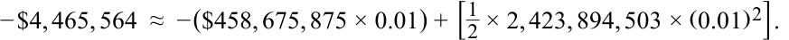
By using both MoneyDur and MoneyCon, the difference in the estimated versus the actual changes in bond position value is only $2,320. Exhibit 5 summarizes these results and shows the estimated and actual changes in position value for a 100 bp decrease in yield.
Bằng cách sử dụng cả $\text{MoneyDur}$ và $\text{MoneyCon}$, sự khác biệt giữa mức thay đổi ước tính và thực tế trong giá trị vị thế trái phiếu chỉ là $\$2,320$. Bảng 5 tóm tắt các kết quả này và cho thấy các mức thay đổi ước tính và thực tế trong giá trị vị thế đối với mức giảm 100 bp trong lợi suất.
Exhibit 5: Using Money Duration and Money Convexity to Estimate Bond Price Changes
Bảng 5: Sử dụng Thời lượng Tiền tệ và Độ lồi Tiền tệ để Ước tính Thay đổi Giá Trái phiếu (Exhibit 5: Using Money Duration and Money Convexity to Estimate Bond Price Changes)
| Estimated ∆PVFull |
Differ- ence from |
Estimated ∆PVFullUsing |
Differ- ence from |
||
|---|---|---|---|---|---|
| Change in Bond Yield |
Actual ∆PVFull |
Using MoneyDur |
Actual Change |
MoneyDur + MoneyCon |
Actual Change |
| + 100 BPS | –$4,467,884|–$4,586,759 | $118,875|–$4,465,564 | –$2,320 | ||
| – 100 BPS | $4,710,348|$4,586,759 | –$123,590|4,707,953|–$2,395 |
| Thay đổi trong Lợi suất Trái phiếu (Change in Bond Yield) | Thực tế (Actual) ∆PVFull | Ước tính ∆PVFull Sử dụng MoneyDur | Chênh lệch so với Thay đổi Thực tế (Difference from Actual Change) | Ước tính ∆PVFull Sử dụng MoneyDur + MoneyCon | Chênh lệch so với Thay đổi Thực tế (Difference from Actual Change) |
|---|---|---|---|---|---|
| + 100 BPS | –$4,467,884|–$4,586,759 | $118,875|–$4,465,564 | –$2,320 | ||
| – 100 BPS | $4,710,348|$4,586,759 | –$123,590|$4,707,953 | –$2,395 |
KNOWLEDGE CHECK
KIỂM TRA KIẾN THỨC (KNOWLEDGE CHECK)
An investor holds a position in five-year, zero-coupon Federal Republic of Germany bonds settling 11 May 2025 and maturing 11 April 2030. The yield-to-maturity is –0.72%, stated as an effective annual rate on an Act/ Act basis. There are five annual periods, and settlement is 30 days into the 365-day year.
Một nhà đầu tư nắm giữ một vị thế trái phiếu Cộng hòa Liên bang Đức kỳ hạn 5 năm, không trả lãi định kỳ, thanh toán vào ngày 11 tháng 5 năm 2025 và đáo hạn vào ngày 11 tháng 4 năm 2030. Lợi suất đáo hạn là $-0.72\%$, được công bố dưới dạng lãi suất hiệu dụng hàng năm (effective annual rate) trên cơ sở Act/Act. Có 5 kỳ hàng năm, và ngày thanh toán là 30 ngày đã trôi qua trong năm có 365 ngày.
- Calculate the full price of the bond per 100 of par value.
- Tính giá toàn phần của trái phiếu trên mỗi 100 mệnh giá.
Solution:
Lời giải:
Because Excel’s PRICE function does not work for negative yields, the equation for PV of a zero-coupon bond must be used. There are five annual periods, settlement is 30 days into the 365-day year, and because 1 + r = 1 + (–0.0072) = 0.9928, the full price of the bond is 103.6175 per 100 of par value:
Bởi vì hàm PRICE của Excel không hoạt động đối với lợi suất âm, phương trình tính $PV$ của một trái phiếu không trả lãi định kỳ phải được sử dụng. Có 5 kỳ hàng năm, ngày thanh toán là 30 ngày trong năm 365 ngày, và bởi vì $1 + r = 1 + (-0.0072) = 0.9928$, giá toàn phần của trái phiếu là 103.6175 trên mỗi 100 mệnh giá:
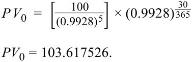
- Calculate ApproxModDur and ApproxCon using a 1 bp increase and decrease in the yield-to-maturity.
- Tính $\text{ApproxModDur}$ và $\text{ApproxCon}$ bằng cách sử dụng mức tăng và giảm 1 bp trong lợi suất đáo hạn.
Solution:
Lời giải:
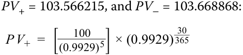
PV + = 103.566215.
$PV_+ = 103.566215$, và $PV_- = 103.668868$:
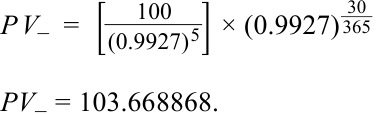
The approximate modified duration is 4.9535:
Thời lượng điều chỉnh xấp xỉ là 4.9535:
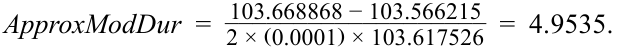
The approximate convexity is 29.918:
Độ lồi xấp xỉ là 29.918:
_______ ApproxCon_ =103.668868 + 103.566215 − (2 × 103.617526) = 29.918.( 0.0001)2 × 103.617526
- Calculate the estimated convexity-adjusted percentage price change resulting from a 100 bp increase in the yield-to-maturity.
- Solution:
- Tính phần trăm thay đổi giá ước tính đã điều chỉnh theo độ lồi do mức tăng 100 bp trong lợi suất đáo hạn.
- Lời giải:
The convexity-adjusted percentage price change from a 100 bp increase in yield-to-maturity is estimated as –4.80391%. Modified duration alone estimates the change as –4.9535%. The convexity adjustment adds 14.96 bps.
Phần trăm thay đổi giá đã điều chỉnh theo độ lồi khi lợi suất đáo hạn tăng 100 bp được ước tính là $-4.80391\%$. Nếu chỉ dùng riêng thời lượng điều chỉnh thì mức thay đổi ước tính là $-4.9535\%$. Phần điều chỉnh độ lồi cộng thêm 14.96 bps.
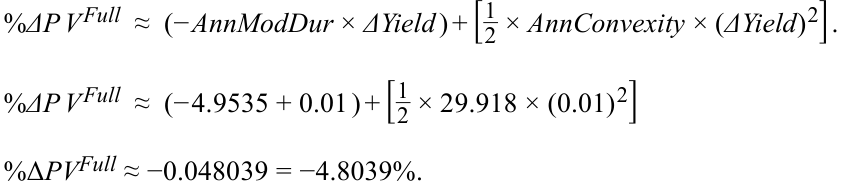
- Compare the estimated percentage price change with the actual change, assuming the yield-to-maturity jumps 100 bps, to 0.28%, on the settlement date.
- So sánh phần trăm thay đổi giá ước tính với mức thay đổi thực tế, giả sử lợi suất đáo hạn tăng vọt 100 bps, lên mức 0.28%, vào ngày thanh toán.
Solution:
Lời giải:
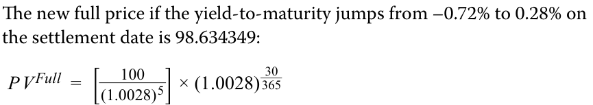
PVFull = 98.634349
Giá toàn phần mới nếu lợi suất đáo hạn tăng vọt từ $-0.72\%$ lên $0.28\%$ vào ngày thanh toán là 98.634349:
The actual percentage change in the bond price is –4.80920% (98.634349/103.617526 − 1). The convexity-adjusted estimate is –4.80391%, whereas the estimated change using modified duration alone is –4.95350%.
Phần trăm thay đổi thực tế trong giá trái phiếu là $-4.80920\%$ ($98.634349/103.617526 - 1$). Ước tính đã điều chỉnh theo độ lồi là $-4.80391\%$, trong khi mức thay đổi ước tính chỉ sử dụng thời lượng điều chỉnh là $-4.95350\%$.
QUESTION SET
BỘ CÂU HỎI (QUESTION SET)
Questions 1–4 relate to the following information.
Các câu hỏi 1–4 liên quan đến thông tin sau đây.
An investor purchases a €10 million semi-annual 2.95% coupon bond with a yield-to-maturity of 2.95%, settling 30 June 2025 and maturing 30 June 2032.
Một nhà đầu tư mua một trái phiếu trị giá 10 triệu EUR trả lãi coupon bán niên 2.95% với lợi suất đáo hạn là 2.95%, thanh toán vào ngày 30 tháng 6 năm 2025 và đáo hạn vào ngày 30 tháng 6 năm 2032.
- Calculate ApproxModDur and ApproxCon for the bond using a 1 bp increase and decrease in yield-to-maturity.
- Tính $\text{ApproxModDur}$ và $\text{ApproxCon}$ cho trái phiếu bằng cách sử dụng mức tăng và giảm 1 bp trong lợi suất đáo hạn.
Solution:
Lời giải:
PV + = PRICE(DATE(2025,6,30),DATE(2032,6,30),0.0295,0.0296,100,2,0)